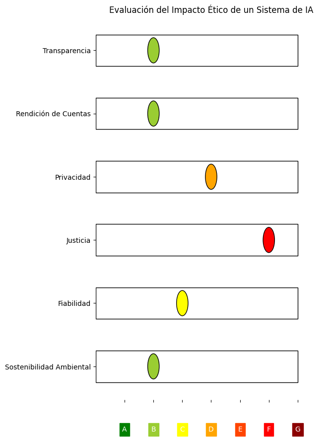

Respeto a la Autonomía:
Obtención de consentimiento libre e informado para la recolección y uso de datos biométricos.
Transparencia sobre los algoritmos y procesos de IA que se utilizan.
No Maleficencia:
Minimización de riesgos y daños potenciales a través de pruebas y evaluaciones rigurosas.
Implementación de medidas de seguridad para proteger los datos biométricos.
Beneficencia:
Maximización de los beneficios sociales de la IA biométrica, priorizando la salud, seguridad y bienestar.
Diseño de sistemas que respondan a las necesidades y valores de la sociedad.
Justicia:
Equidad y no discriminación en el desarrollo y uso de la IA biométrica.
Prevención de sesgos algorítmicos y promoción de la inclusión.
Cumplimiento de la Ley de IA de la UE (AIA):
Evaluación de sistemas de IA biométrica para determinar su nivel de riesgo.
Implementación de las medidas de seguridad y transparencia requeridas por la AIA.
Cumplimiento de otras regulaciones relevantes:
Protección de datos personales (GDPR)
Derechos de autor y propiedad intelectual (Convenio de Berna)
Ciberseguridad (European Cybersecurity Act)
Establecimiento de un marco de gobernanza para la IA:
Definición de roles y responsabilidades para el desarrollo y uso ético de la IA.
Implementación de mecanismos de supervisión y evaluación.
Compromiso con la transparencia:
Publicación de información sobre los sistemas de IA biométrica, incluyendo sus algoritmos, datos y procesos.
Facilitación del acceso a los datos y herramientas de IA para la investigación y auditoría independientes.
El Sello Ético IA (SEIA) es un proceso de certificación voluntario que evalúa la ética de los sistemas de biometría e IA desarrollados por la organización.
El objetivo del SEIA es aumentar la confianza en la IA, promover el desarrollo y uso responsable de la tecnología, y proteger los derechos y libertades de las personas.
Los criterios del SEIA se basan en los siguientes principios:
Transparencia: Claro entendimiento de cómo funciona la IA o el sistema biométrico y cómo se toman las decisiones.
Rendición de Cuentas: Existencia de protocolos para responder ante fallas o errores del sistema.
Privacidad: Cumplimiento con la protección de datos y el consentimiento del usuario.
Justicia: Equidad en el tratamiento de datos y prevención de sesgos discriminatorios.
Fiabilidad: Consistencia y confiabilidad en las operaciones del sistema.
Sostenibilidad Ambiental: Impacto ambiental del sistema en términos de recursos y energía.

La imagen de arriba es una simulación ficticia de una evaluación potencial.
Cada categoría (e.g. Transparencia, Rendición de Cuentas, Privacidad, Justicia, Fiabilidad, Sostenibilidad Ambiental) puede ser evaluada según criterios específicos y recibir una calificación desde "A" (mejor) hasta "G" (peor).
Preguntas para evaluar un sistema biométrico o modelo de IA según los criterios SEIA:
Transparencia:
¿Se documenta de manera clara y accesible el funcionamiento del sistema de IA, incluyendo su arquitectura, datos de entrenamiento y algoritmos?
¿Se proporciona información clara sobre las decisiones tomadas por el sistema y cómo se han llegado a tomar?
¿Se permite a los usuarios acceder a sus datos personales y comprender cómo se están utilizando?
Rendición de Cuentas:
¿Se ha establecido un proceso claro para identificar y abordar los daños causados por el sistema de IA?
¿La organización tiene la capacidad financiera y técnica para responder por los daños causados por su sistema de IA?
¿Se ha establecido un mecanismo para que los usuarios puedan presentar quejas y obtener reparación por daños?
Privacidad:
¿Se recopilan y almacenan los datos personales de forma segura y responsable?
¿Se implementan medidas para proteger los datos personales contra el acceso no autorizado, la pérdida o el robo?
¿Se informa a los usuarios sobre cómo se están utilizando sus datos personales y cómo pueden controlar su uso?
Justicia:
¿Se ha realizado un análisis para identificar y mitigar sesgos en el sistema de IA?
¿Se han implementado medidas para garantizar que el sistema no discrimina a las personas en base a características protegidas como raza, género, religión u orientación sexual?
¿Se ha evaluado el impacto del sistema en diferentes grupos de la sociedad?
Fiabilidad:
¿Se han realizado pruebas exhaustivas para garantizar que el sistema de IA funciona de manera precisa y confiable?
¿Se han implementado medidas para garantizar la robustez del sistema frente a errores y ataques?
¿Se ha establecido un proceso para monitorizar el rendimiento del sistema de IA y realizar las correcciones necesarias?
Sostenibilidad Ambiental:
¿Se ha evaluado el impacto ambiental del sistema de IA, incluyendo el consumo de energía y recursos?
¿Se han implementado medidas para minimizar el impacto ambiental del sistema de IA?
¿Se han considerado alternativas más sostenibles al sistema de IA?
Árbol de decisión para la viabilidad de una tecnología:
¿Se cumplen todos los criterios SEIA?
|
|-- SÍ
| |
| |-- Implementar la tecnología.
|
|-- NO
|
|-- Evaluar las respuestas a las preguntas de cada criterio.
|
|-- ¿Es posible mitigar el riesgo asociado al criterio?
| |
| |-- SÍ
| | |
| | |-- Continuar con la evaluación.
| |
| |-- NO
| |
| |-- Detener el desarrollo de la tecnología.
|
|-- Si se han mitigado los riesgos o se cumplen todos los criterios:
|
|-- ¿Es la tecnología viable desde un punto de vista técnico?
| |
| |-- SÍ
| |
| |-- NO
| |
| |-- Detener el desarrollo de la tecnología.
|
|-- ¿Es la tecnología viable desde un punto de vista económico?
| |
| |-- SÍ
| |
| |-- NO
| |
| |-- Detener el desarrollo de la tecnología.
|
|-- ¿Existe un mercado viable para la tecnología?
|
|-- SÍ
| |
| |-- Implementar la tecnología.
|
|-- NO
|
|-- Detener el desarrollo de la tecnología.